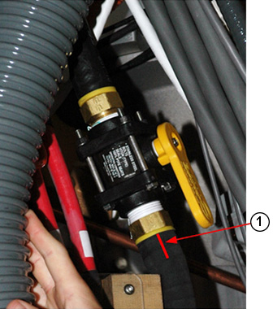
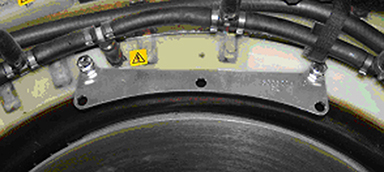
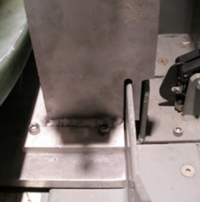
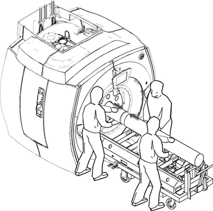
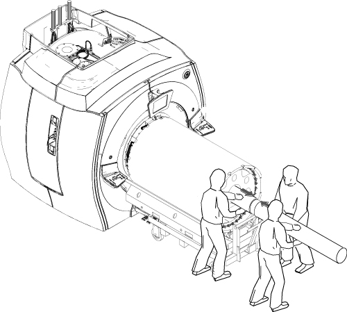
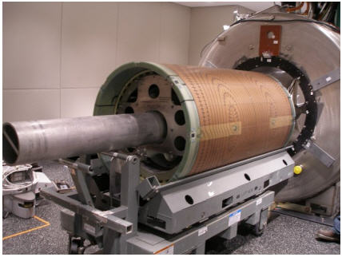
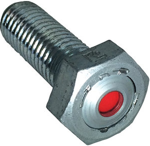
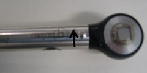

- 00000018WIA3038C030GYZ
- id_123740611.81
- Sep 10, 2025 5:11:03 PM
Replacing the XRMw gradient coil
Replace the XRMw gradient coil.
Prerequisites
| Personnel requirements | |||
|---|---|---|---|
| Required persons | Preliminary requirements | Procedure | Finalization |
| 3 | - | 3 days | - |
| Tools and test equipment | |||
|---|---|---|---|
| Item | Quantity | Part number | Manufacturer |
| Extension Cord | 1 | - | - |
| Set: Nonabsorbent Protective Clothing (long sleeve shirt and pants) | 1 set per person | - | - |
| Safety Glasses | 1 pair per person | - | - |
| Pair: Nonferrous Safety Shoes | 1 pair per person | - | - |
| Latex-Free Nitrile Gloves (8 mil) | 1 | 46-194427P400 | - |
| Gradient Coil Insertion and Lift Kit | 1 | 2164744-7 | - |
| Passive Shim Tray Extraction Tool | 1 | 5325761 | - |
| Universal Field Mapping Fixture Kit | 1 | 5266042-4 | - |
| Gradient Coil Rotational Alignment Tool | 1 | 5266408 | - |
| Shim Camera Kit | 1 | 2386028-3 | - |
| Coolant Removal Kit | 1 | 5269683 | - |
| B0 Power Supply Kit | 1 | 2141701 | - |
| Nonmagnetic Titanium Service Tool Kit, Large Set | 1 | 5112581 | - |
| Torque Wrench, 8 to 50 N m Adjustable, Nonmagnetic | 1 | 5534134 or 5534134-2 | - |
| 5 Gallon Pail | 1 | 2239133 | - |
| Nonmagnetic 80 N m Fixed Torque Wrench Kit | 1 | 5790177 | - |
| Authorized Personnel Floor Sign (Included in Safety Sign Kit 46-258770G4) | 1 | 2289812 | - |
| Long Room Gray Coil Cart with Cradle (2444 mm) | 1 of either cart | 2144093 | - |
| Short Room Blue Coil Cart with Cradle (2416 mm) | 2144093-2 | - | |
| Consumables | |||
|---|---|---|---|
| Item | Quantity | Part number | Manufacturer |
| Isopropyl Alcohol, 70%, USFS-200 | 1 | - | - |
| Scour Pad (or equivalent) | As needed | - | Scotch-Brite™ |
| Cable Tie, 190 Wide X 14 large, nylon | 100 | 46-252283P68 | - |
| Loctite #271 (Red) (Check expiration date) | 1 | 46-170684P2 | - |
| Never-Seez Regular Grade Lubricating and Anti-Seize Compound | As needed | 46-294151P8 | Bostik |
| Loctite #243 (10 ml) (Check expiration date) | As needed | 5415261-2 | - |
| Clean Lint-Free Towels (Kimwipes™) | As needed | - | - |
| Coolant (Four 1-Gallon Bottles) (approximately 15 gallons of coolant required for each XRMB installation) | 4 | 5174313-4 or 5174313-14 | - |
| Required conditions |
|---|
| Before beginning this procedure, at least one person must complete the training course, GEHC-TECH-AMOL-CT530-01_CURR. |
| Safety | ||||||||||||||||||||||||
|---|---|---|---|---|---|---|---|---|---|---|---|---|---|---|---|---|---|---|---|---|---|---|---|---|
|
Before working in any GE HealthCare MR suite or doing any GE HealthCare service procedure, you must:
If you have any safety concerns at any time, do not begin work or immediately stop work and move to a safe location. Immediately contact your supervisor or site safety officer for instructions on how to proceed. | ||||||||||||||||||||||||
| ||||||||||||||||||||||||
About this task
Overview
This procedure describes the replacement of the XRMw gradient coil using the Gradient Coil Insertion and Lift Kit (2164744-7) and requires disposal of coolant. Tell the customer about coolant disposal, and then follow the proper customer coolant disposal procedure.
Preliminary tasks
Procedure
If the magnet is ramped, remove all passive shim trays from the XRMw gradient coil before the installation and store them in a safe place.CAUTION 
The procedure for replacing shim trays is in the Magnet and Cryogen Manual for 1.5T HM Series Magnets (5927844-8EN).
Removing coolant
Procedure
LOTO should already be applied to the HEC. [See Applying LOTO - Heat Exchanger Cabinet (HEC).]DANGER 
The connection between hose and fitting is pressure only. To properly remove a hose from the fitting, carefully cut a slit on the manifold hose (avoid damaging the water fitting), and slide it off the barb to disconnect the supply manifold from the fitting.CAUTION - Repeat for the return line.
- Retain the fittings at the site.
Figure 2. Barb fitting and valve 
1 Cut a slit on the manifold hose
Slowly disconnect the supply, then the return manifold from the valve, and drain the fluid into the bucket.Notice 
Figure 3. Draining manifold coolant 
Cable removal and busbar cable disconnection
Procedure
Preparing for XRMw coil removal
Procedure
- Attach three adapter plates (5338222) to the patient end of the gradient coil at 3, 9, and 12 o'clock positions with M10 x 20 mm bolts and M10 nuts.
Figure 8. Adapter plate on gradient coil (patient end) 
Figure 9. Bolt with nut 
- Retrieve the mounting plates (5161985 and 5161983) and the two tube guide roller assemblies (5308402) from the gradient coil insertion and lift kit shipping crate, and securely attach the roller assemblies to the mounting plates.
Figure 11. Roller assemblies and mounting plates 
1 Mounting plate, patient end 2 Mounting plate, service end 3 Roller assemblies
Removing the XRMw coil with a cart
Procedure
Warning
Put the tube jacking assembly (5191132) in the cart, making sure the back of the jack assembly fits properly into the cart.Notice Figure 19. Jack assembly placement 
- Maneuver the cart to the patient end of the magnet, and put it in front of the magnet with at least a 2 inch (50.8 mm) gap between the cart and the magnet interface ring (required for lower wedge removal).
Figure 20. Gap between magnet and cart 
- Retrieve the male insertion tube (2164689) and tube standoff (5191626).
- Attach the tube standoff to the male insertion tube using the 4 inch, 0.375–16 UNC hex socket screw (5303993) included in the gradient coil insertion and lift kit.
- After the standoff is secured to the tube, attach the tube pilot shaft to the standoff.
Figure 21. Attaching the standoff to the insertion tube 
- Remove the PVC shield from the brass thread of the male insertion tube.
Figure 22. PVC shield for the brass thread 
- Slide the male insertion tube through the tube guide roller assemblies at both sides of the gradient coil, push the pilot shaft through the support plate mounting bearing, and insert a nonmagnetic safety pin through the hole in the pilot shaft.
Figure 23. Tube pilot shaft and support plate 
With one person holding the male insertion tube to keep it from rolling, two people should get the female insertion tube from the shipping crate and thread the two tubes together.Notice Note Each of the two pieces of the gradient insertion tool weighs less than 15.9 kg (35 lbs).Figure 24. Setting up the insertion tube assembly 
Recheck the centering of the cart left-to-right with respect to the magnet bore, and adjust the longitudinal alignment of the cart if necessary.Notice - Simultaneously raise the tube jack and the support plate mounting bearing to lift the gradient coil.
Figure 25. Raising the XRMw gradient coil 
Properly secure the gradient coil to the coil cart with gradient coil shipping bracket (5357473).CAUTION
Remove the insertion tool from the gradient coil.CAUTION
Preparation before XRMw installation
Procedure
- Remove the shipping brackets securing the gradient coil to the cart.
Figure 26. XRMw shipping bracket(s) 
- Remove the gradient coil cradle fasteners (two per side) from the cradle.
Figure 27. Removing cradle fasteners 
Align the mounting holes on the patient end of the mounting plate (5161985) with those in the adapter plate (5338222), including the guide roller assemblies already attached to the gradient coil, and secure them using the M10 x 20 mm bolts and M10 nuts.Notice Figure 28. Mounting plate with roller assemblies (patient end)
Installing the XRMw gradient coil
Procedure
Put the tube jacking assembly (5191132) in the cart, making sure the back of the jack assembly fits properly into the cart. (See Jack assembly placement.)Warning - Raise or lower the cradle of the cart as required to vertically align the tube support plate at the magnet and the gradient mounting plates at the gradient coil.
Figure 32. Adjusting cart height 
With one person holding the male insertion tube to keep it from rolling, two people should obtain the female insertion tube from the shipping crate and thread the two tubes together.Notice Figure 33. Setting up insertion tube assembly 
Push the complete insertion tube assembly into the magnet bore so the tube pilot shaft is close, but not touching, the tube support plate.Notice Figure 34. Complete insertion tube assembly 
- Shake the container, apply red LOCTITE #271 to the two axial stops in the patient end magnet flange, and then tighten the brass bolts securely to the stops.
- Apply one or two drops of red LOCTITE #271 to the holes in the patient end magnet flange.
- Slowly lower the support plate bearing and tube jack so the full weight of the XRMw gradient coil is loaded onto the lower wedges.
Figure 36. Lowering the XRMw gradient coil with the alignment tool 
Install the wedges (with one G10 washer and one brass M10 x 35 mm hex head bolt per wedge) on the patient end of the magnet flange in the order shown for the applicable 10- or 4-wedge system. (See Systems with 10 wedges or Systems with 4 wedges.)Notice - Note Observe the following:Reinstall the busbar cables to the new gradient coil, placing a new Nord-Lock washer over each M12 SmartBolt prior to torquing in place.
- Always use the new Nord-Lock washers that come with the FRU package. Do not reuse the old Nord-Lock washers and stainless steel flanged nuts.
- Nord-Lock washers consist of two pieces, which are generally glued together. Always use a complete set with two pieces joined together in correct orientation. Do not use a separated single piece.
Figure 37. Nord-Lock washer configuration 
- Inspect the gradient coil terminal surface for contaminants or gouges, and clean the surface before installing the busbar terminal.
Notice Figure 38. SmartBolt 
DANGER
Set the torque wrench to 59 ft-lbs (80 N m), and install the 19 mm socket onto the extension.Notice Note Make sure that the arrow on the torque wrench is visible. If the arrow is not visible, the torque wrench will not click when the proper torque is reached.Figure 39. Arrow on the nonmagnetic torque wrench 
Finalization
Procedure
Reinstall all passive shim trays into their proper slots.CAUTION The procedure for replacing shim trays can be found in the Magnet and Cryogen Manual for 1.5T HM Series Magnets (5927844-8EN).